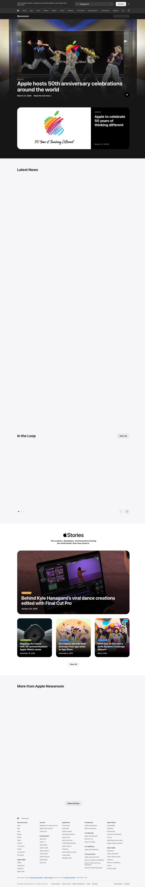

蘋果推出 iPhone 17e：強大且實惠的選擇
蘋果今日宣布推出 iPhone 17e，這是 iPhone 17 系列中強大且實惠的新成員。iPhone 17e 配備最新一代 A19 晶片，效能出色。採用蘋果自行設計的 C1X 數據機，比 iPhone 16e 的 C1 快達兩倍。4800 萬像素 Fusion 相機可拍攝令人驚艷的照片，包括下一代人像模式和 4K Dolby Vision 影片。6.1 吋 Super Retina XDR 顯示器配備 Ceramic Shield 2，防刮能力比前代提升三倍。iPhone 17e 起始容量為 256GB，售價 599 美元，3 月 4 日開始預購，3 月 11 日正式上市。共有黑色、白色和全新粉色三種優雅顏色可選。
Apple NewsroomApple Launches iPhone 17e: Powerful and Affordable Choice
Apple today announced iPhone 17e, a powerful and affordable addition to the iPhone 17 lineup. iPhone 17e features the latest-generation A19 chip for exceptional performance. It comes with Apple's C1X cellular modem, which is up to two times faster than C1 in iPhone 16e. The 48-megapixel Fusion camera captures stunning photos, including next-generation portraits and 4K Dolby Vision video. The 6.1-inch Super Retina XDR display features Ceramic Shield 2, offering three times better scratch resistance than the previous generation. iPhone 17e starts at 256GB of storage for $599, available for pre-order starting March 4th and on sale starting March 11th. It comes in three elegant colors: black, white, and a beautiful new pink.